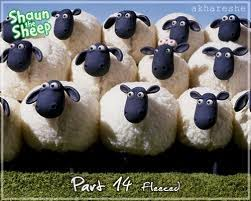

Người đến dự đám cưới khá đông. Ông hàng xóm gọi bác làm công
đến và bảo:
Người đến dự đám cưới khá đông. Ông hàng xóm gọi bác làm công
đến và bảo:
Người đến dự đám cưới khá đông. Ông hàng xóm gọi bác làm công
đến và bảo:
- Này, anh đi xem xem có bao nhiêu người đến dự đám cưới bên ấy.
Bác làm công ra đi. Bác để lên ngưỡng cửa một khúc gỗ và ngồi lên bờ tường đợi khách khứa ra khỏi nhà. Họ bắt đầu ra về. Ai đi ra cũng vấp phải khúc gỗ, văng lên chửi và lại tiếp tục đi. Chỉ có một bà lão vấp phải khúc gỗ, liền quay lại đẩy khúc gỗ sang bên. Bác làm công trở về gặp người chủ.
 Người chủ hỏi:
- Ở bên ấy có nhiều người không?
Bác làm công trả lời:
- Chỉ có mỗi một người mà lại là bà lão.
- Tại sao vậy?
- Bởi vì tôi để khúc gỗ bên thềm nhà, tất cả đều vấp phải, nhưng cũng chẳng ai buồn dẹp đi. Thế thì lũ cừu cũng làm như vậy. Nhưng một bà lão đã dẹp khúc gỗ sang bên để người khác khỏi vấp ngã. Chỉ có con người mới làm như vậy. Một mình bà lão là người.
 Câu chuyện ngụ ngôn" Chỉ Có Một Người Thôi" là một câu chuyện hay,có từ
ngữ giản dị, xúc tích...hàm chứa những ý nghĩa thiết thực đáng trân trọng
trong cuộc sống thường nhật của chúng ta. Đây là một câu chuyện cũng như
một bài học được rút ra từ đời thường mà có lẽ tác giả đã từng bắt gặp
trong một dịp nào đó, nhằm gửi gắm cho những ai có tâm ích kỷ, có mắt như
mù, chỉ biết cá nhân mình mà không hề nghĩ đến bản thân của người khác.
Mong rằng tất cả mọi chúng ta,sau khi đọc câu chuyện trên, hãy noi gương
bà lão kia để cuộc sống của chúng ta ngày mỗi thăng hoa và có ý nghĩa hơn.
Kính chúc quý độc giả gặp nhiều an lac, hạnh phúc.
Câu chuyện ngụ ngôn" Chỉ Có Một Người Thôi" là một câu chuyện hay,có từ
ngữ giản dị, xúc tích...hàm chứa những ý nghĩa thiết thực đáng trân trọng
trong cuộc sống thường nhật của chúng ta. Đây là một câu chuyện cũng như
một bài học được rút ra từ đời thường mà có lẽ tác giả đã từng bắt gặp
trong một dịp nào đó, nhằm gửi gắm cho những ai có tâm ích kỷ, có mắt như
mù, chỉ biết cá nhân mình mà không hề nghĩ đến bản thân của người khác.
Mong rằng tất cả mọi chúng ta,sau khi đọc câu chuyện trên, hãy noi gương
bà lão kia để cuộc sống của chúng ta ngày mỗi thăng hoa và có ý nghĩa hơn.
Kính chúc quý độc giả gặp nhiều an lac, hạnh phúc.
 Câu chuyện có khía cạnh đúng. Nếu 1 người mà mọi suy nghĩ, hành động vì
bản thân thì người đó chẳng khác gì 1 động vật. Cái khác biệt nhất giữa 1
con người và 1 con vật là người đó biết sống vì người khác. Nếu nhìn qua
thì thấy câu nói hơi cực đoan, vơ đũa cả nắm nhưng đặt trong hoàn cảnh câu
nói được nói ra bởi nhân vật bác làm thuê thì có thể chấp nhận được. Cái
quan trọng là bài học được rút ra!
Câu chuyện có khía cạnh đúng. Nếu 1 người mà mọi suy nghĩ, hành động vì
bản thân thì người đó chẳng khác gì 1 động vật. Cái khác biệt nhất giữa 1
con người và 1 con vật là người đó biết sống vì người khác. Nếu nhìn qua
thì thấy câu nói hơi cực đoan, vơ đũa cả nắm nhưng đặt trong hoàn cảnh câu
nói được nói ra bởi nhân vật bác làm thuê thì có thể chấp nhận được. Cái
quan trọng là bài học được rút ra!
 Mình thấy bài này rất hay, vì cuộc sống của chúng ta chỉ thật sự hạnh phúc
khi chúng ta biết sống vì người khác. Muốn người khác làm gì cho mình thì
chính mình hãy làm cho họ trước.
Mình thấy bài này rất hay, vì cuộc sống của chúng ta chỉ thật sự hạnh phúc
khi chúng ta biết sống vì người khác. Muốn người khác làm gì cho mình thì
chính mình hãy làm cho họ trước.